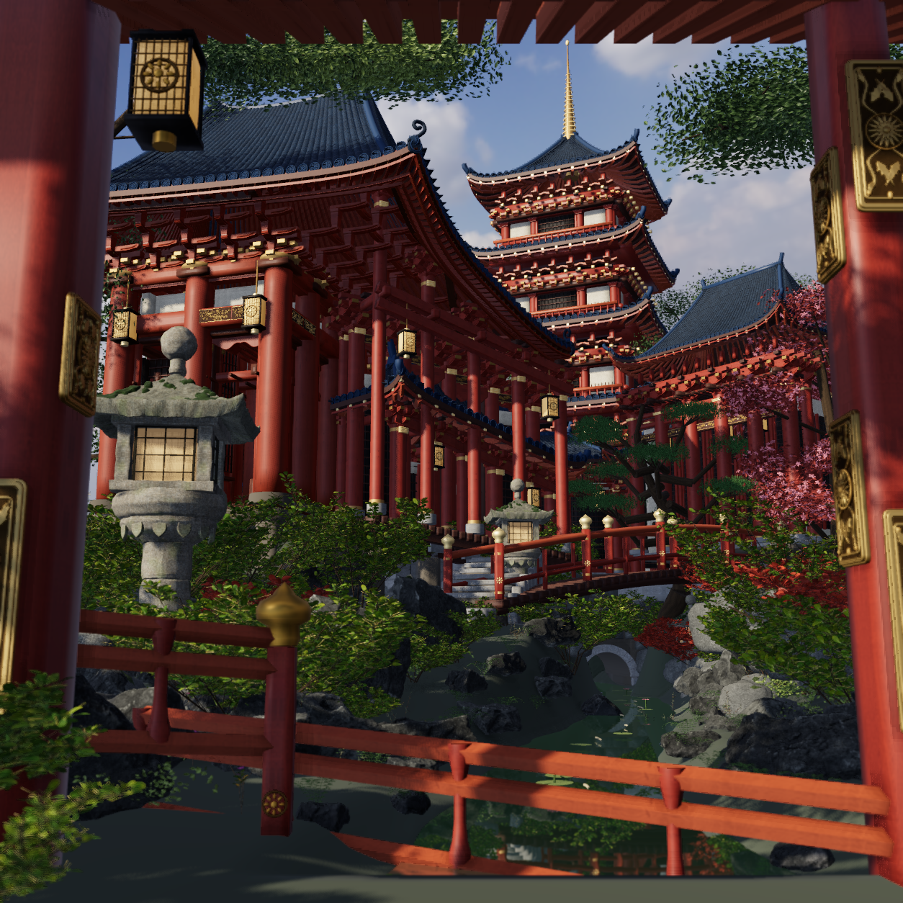

Scene08 原尺寸比较
左参考、右R09实际原生图；两者均1254×1254，不缩放、不调色。摄影未验收。
左：references/hd/7-照片-8.jpg
右：R09 source3e8b01a52ab98b25ca2a231b41e246160c62f6025d3e06576aa4314ed0ec305b

 右：R09 source3e8b01a52ab98b25ca2a231b41e246160c62f6025d3e06576aa4314ed0ec305b
右：R09 source3e8b01a52ab98b25ca2a231b41e246160c62f6025d3e06576aa4314ed0ec305b